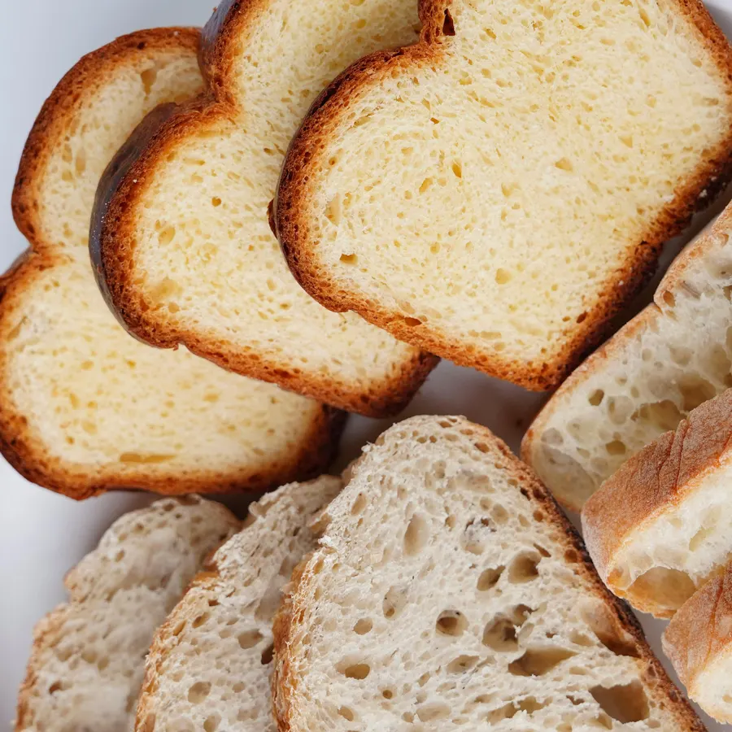
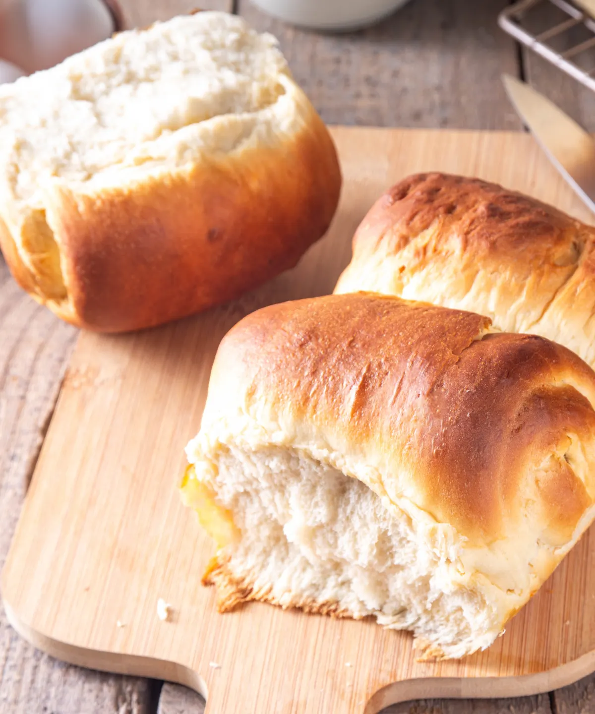
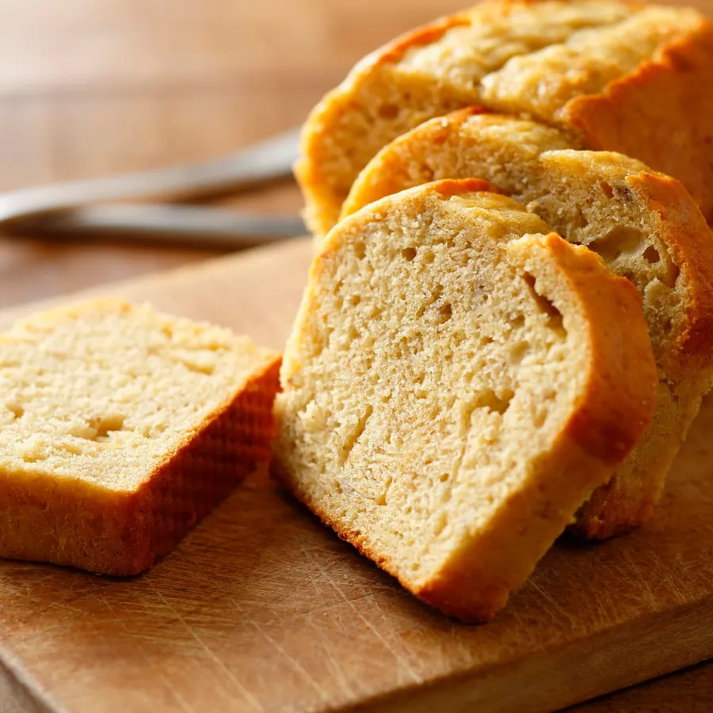
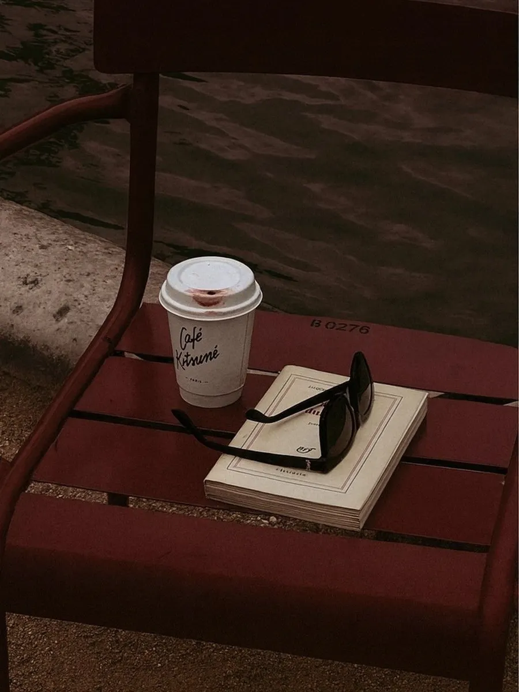
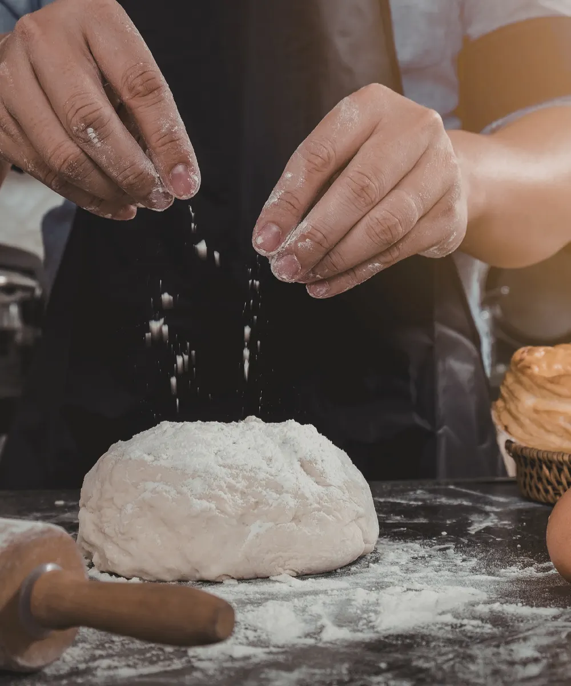

Shokupan Branco
O clássico japonês. Miolo macio, casca delicada e sabor levemente amanteigado. Ideal para sandos, toasts e o dia a dia.
Pedir pelo WhatsAppShokupan premium
Panificação japonesa moderna. Pães artesanais orientais, café e lanches.

O que é Shokupan
Em japonês, shokupan quer dizer “pão para comer”. Ele tem maciez extrema, um miolo úmido que se desfaz em fios e casca fina e delicada.
Parte da farinha é pré-cozida com líquido (técnica yudane, ou tangzhong). Ela retém mais umidade, e o pão fica mais macio e aerado que o pão de forma comum.
Doce ou salgado: tamago sando, katsu sando, frango teriyaki, toasts, french toast e sobremesas.
Leve dulçor, sabor amanteigado e uma estrutura que se mantém úmida por dias.
Um único pão. Diversas possibilidades.
Nossos Pães

O clássico japonês. Miolo macio, casca delicada e sabor levemente amanteigado. Ideal para sandos, toasts e o dia a dia.
Pedir pelo WhatsApp
A versão integral da linha Hokkari, com a mesma maciez característica e sabor mais encorpado.
Pedir pelo WhatsApp
Cardápio
Tabela especial para empresas, pedido mínimo de 6 unidades do mesmo modelo, entrega em todo o estado de São Paulo e Kit Descoberta para teste.
Quero o Kit Descoberta →
A Hokkari nasceu da admiração pela panificação japonesa e pela forma como ela transforma algo simples em experiência. O shokupan é o nosso protagonista, com simplicidade bem executada, técnica e ingredientes de qualidade.
Acreditamos que produtos premium não precisam ser inacessíveis, e que comida também comunica sensação.